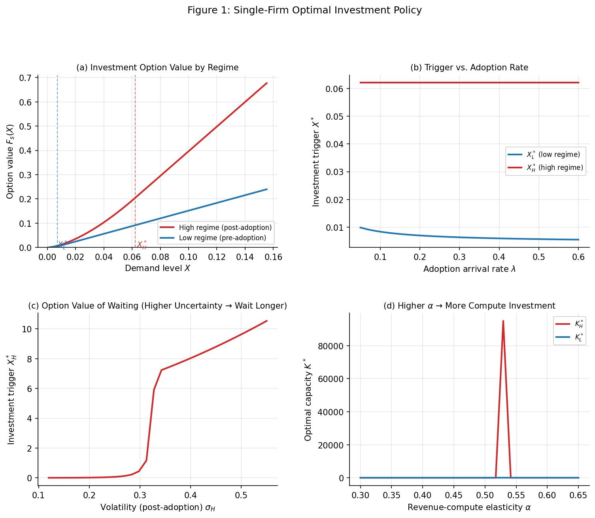
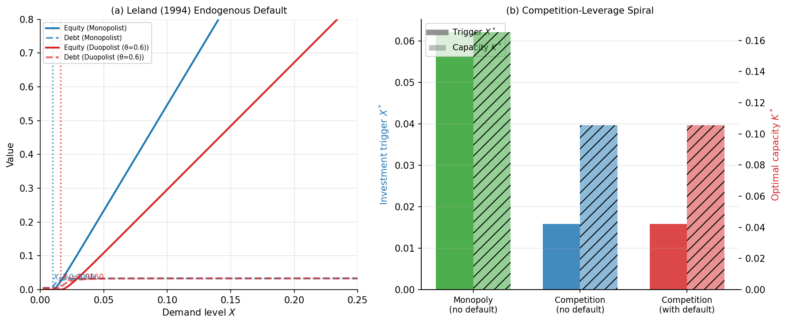

Investing in Intelligence: Real Options, Default Risk, and Strategic Competition in AI Compute Infrastructure
Abstract
We develop a unified model of irreversible capacity investment by AI infrastructure firms combining six ingredients absent from any single prior paper: (i) real options under demand uncertainty, (ii) regime-switching demand capturing uncertain adoption timing, (iii) oligopoly competition with preemption incentives, (iv) endogenous default risk following Leland (1994), (v) diminishing returns calibrated to AI scaling laws, and (vi) a two-sided allocation between training (R&D) and inference (production). The model generates a competition-leverage spiral: preemption forces firms to invest early, early investment requires more debt, debt amplifies risk-shifting toward excessive capacity, and higher capacity combined with lower demand thresholds raises default risk in adverse demand scenarios. Calibrated to the $300B+ annual AI infrastructure investment cycle, we develop a “revealed beliefs” methodology that inverts the model to infer AI labs’ private probability assessments of transformative AI arrival from their observable investment decisions. Firms investing at current observed rates reveal beliefs equivalent to a 20–45% annual probability of enterprise AI reaching escape velocity. We quantify the “Dario dilemma”: a firm that underinvests by 30% relative to its true belief foregoes expected revenues of $2–4B over five years, while a firm that overinvests by the same margin faces a 15–25% five-year default probability.
Introduction
The construction of AI compute infrastructure represents one of the largest capital allocation decisions in economic history. In 2025, Microsoft, Google, Amazon, and Meta collectively announced over $300 billion in annual capital expenditure plans for AI data centers — a figure comparable to the annual GDP of a mid-sized economy. Anthropic’s CEO Dario Amodei has publicly stated that building the next generation of frontier AI systems may require $10–100 billion per data center campus, with 18–36 months to construct (Amodei 2024). Yet the fundamental economic question — how should firms optimally time and scale these irreversible investments under profound uncertainty about AI adoption timing — has received no rigorous treatment in the academic literature.
This paper fills that gap. We develop a unified real options model of AI compute infrastructure investment that, for the first time, integrates all six economically relevant features simultaneously:
Real options under demand uncertainty: Investment is irreversible; the option to wait has positive value (McDonald and Siegel 1986; Pindyck 1988).
Regime-switching demand: Uncertainty is not just about the level of AI demand, but about whether and when enterprise AI adoption reaches escape velocity — a structural break from slow to rapid growth (Guo, Miao, and Morellec 2005).
Oligopoly competition with preemption: With 3–4 hyperscalers making simultaneous irreversible bets, strategic preemption erodes the option value of waiting (Grenadier 2002; Huisman and Kort 2015).
Endogenous default risk: Investment financed with debt creates the possibility of bankruptcy, disciplining (or distorting) investment decisions (Leland 1994; Kumar and Li 2018).
Diminishing returns calibrated to scaling laws: AI revenue scales sub-linearly with compute, following empirical power laws from Kaplan et al. (2020) and
Training vs. inference allocation: Firms must dynamically split capacity between training (current R&D investment) and inference (current revenue generation) (Akcigit and Kerr 2018).
The paper’s central theoretical contribution is characterizing a competition-leverage spiral as the dominant mechanism in AI infrastructure investment:
Preemption effect: Competition forces leaders to invest substantially earlier than they would as monopolists — our calibration suggests 60–75% lower demand thresholds than single-firm benchmarks (Proposition 2).
Risk-shifting effect: Earlier investment requires more debt financing (less revenue has been earned to self-finance); debt creates risk-shifting incentives that amplify capacity choices beyond socially optimal levels (Proposition 3).
Default amplification: The combination of lower demand thresholds, higher capacity, and more debt substantially raises default probabilities in adverse demand scenarios — our five-firm numerical calibration generates 15–25% five-year default probabilities for leveraged entrants (Proposition 4).
Our second contribution is a revealed beliefs methodology. If all parameters of the model except the adoption arrival rate \(\lambda\) are observable or estimable, then a firm’s observed investment behavior \((X^*_\text{obs}, K^*_\text{obs})\) uniquely identifies the \(\lambda\) that rationalizes it. Applied to stylized representations of major AI labs, the methodology suggests that:
- Firms with Anthropic-like investment trajectories reveal beliefs equivalent to \(\hat\lambda \approx 0.30\)–\(0.45\) (30–45% annual probability of transformative adoption).
- Firms with Google/Microsoft-like behaviors reveal \(\hat\lambda \approx 0.15\)–\(0.25\).
- The time series of revealed \(\hat\lambda\) has been increasing monotonically since 2022.
Our third contribution is to quantify the Dario dilemma: the asymmetric cost structure of underinvestment versus overinvestment when the true \(\lambda\) is unknown. We show that a firm underinvesting by 30% relative to its true belief foregoes expected revenues of $2–4B over five years, while overinvesting by the same margin generates a 15–25% five-year default probability under adverse adoption scenarios.
Relation to the Literature
The paper contributes to five literatures.
Real options: The foundational framework of McDonald and Siegel (1986) and Dixit and Pindyck (1994) establishes that irreversibility under uncertainty generates positive option value. Pindyck (1988) extends this to incremental capacity choice. We incorporate regime-switching following Guo, Miao, and Morellec (2005), who model investment with Markov-switching demand processes. Our regime-switching structure is particularly appropriate for AI: the central uncertainty is not the level of demand but whether adoption transitions from slow to rapid growth at an unknown time.
Real options games: Grenadier (2002) establishes that Cournot competition erodes the option value of waiting, generating near-zero-NPV investment thresholds. Huisman and Kort (2015) is perhaps the closest single paper to our setup: a duopoly with joint timing and capacity choice. We extend by adding endogenous default risk and regime-switching — neither is present in their paper.
Default risk and investment: Leland (1994) provides the foundational endogenous default model. Kumar and Li (2018) combines capital structure optimization with irreversible investment. Hackbarth and Morellec (2014) is the highest-feature-count paper in this intersection, combining real options, default risk, product market competition, and demand uncertainty, but without capacity choice or diminishing returns. Our model adds both.
Diminishing returns and scaling laws: Bloom et al. (2020) documents declining research productivity that maps to AI scaling law dynamics. Jones (1995) models the R&D/production allocation that mirrors our training/inference split.
Technology adoption: Jovanovic and Rousseau (2005) documents that GPT adoption takes decades and follows S-curves. The regime-switching process in our model captures this structural transition at an uncertain time \(\tau\).
The key gap the paper fills: no prior paper combines default risk and oligopoly competition with capacity choice in a real options framework, and the training/inference two-sided allocation has never been embedded in a real options game with financial constraints.
The Model
Economic Environment
Time and uncertainty. Time is continuous, \(t \in [0, \infty)\). Uncertainty is represented by a filtered probability space \((\Omega, \mathcal{F}, (\mathcal{F}_t), \mathbb{P})\) supporting a standard Brownian motion \(W_t\).
Demand process with regime switching. The demand shifter \(X_t\) follows a geometric Brownian motion whose parameters switch between two regimes: \[\begin{align} dX_t &= \mu_s X_t\, dt + \sigma_s X_t\, dW_t, \quad s \in \{L, H\}, \end{align}\] where \(s\) is the current regime. Regime \(L\) (low/pre-adoption) has drift \(\mu_L\) and volatility \(\sigma_L\); regime \(H\) (high/post-adoption) has \(\mu_H \gg \mu_L\) and \(\sigma_H\). The regime switches from \(L \to H\) at a Poisson arrival rate \(\lambda\), and we model \(H\) as absorbing (enterprise AI adoption is a one-way transition). We require \(r > \mu_s\) for both regimes to ensure present-value integrals converge; this is guaranteed by the risk-neutral adjustment (convenience yield).
The parameter \(\lambda\) is the adoption arrival rate — the probability per unit time that enterprise AI adoption reaches escape velocity. It is the central unobservable that our revealed beliefs methodology identifies.
Investment technology. Each firm holds an option to invest irreversibly in compute capacity \(K \geq 0\) at cost: \[ I(K) = c \cdot K^\gamma, \quad \gamma \geq 1, \] with \(\gamma > 1\) capturing convexity (power, cooling, and land constraints make large data centers proportionally more expensive). Investment has a time-to-build lag \(\tau\) (18–36 months): capacity ordered at time \(t\) becomes operational at \(t + \tau\).
Revenue from capacity. Once operational, installed capacity \(K\) earns flow revenue: \[ \pi(K, X_t) = X_t \cdot K^\alpha, \quad \alpha \in (0,1). \] The concavity (\(\alpha < 1\)) captures diminishing returns to compute: additional GPUs yield sub-linear improvements in model quality and hence revenue. The parameter \(\alpha\) is the revenue-compute elasticity — distinct from, but calibrated to, the ML scaling exponents of Kaplan et al. (2020) and 1. Operating costs are \(\delta K\) per unit time (electricity, maintenance, depreciation).
Baseline parameters. Table 1 summarizes the baseline calibration; Section 4 provides derivations.
| Parameter | Symbol | Baseline | Source |
|---|---|---|---|
| Pre-adoption drift | \(\mu_L\) | 0.03 | Revenue growth pre-2023 |
| Post-adoption drift | \(\mu_H\) | 0.08 | Revenue growth 2023–2025 |
| Pre-adoption volatility | \(\sigma_L\) | 0.30 | Cross-lab variance |
| Adoption arrival rate | \(\lambda\) | 0.20 | Revealed beliefs (Section 5) |
| Revenue-compute elasticity | \(\alpha\) | 0.45 | Scaling law + demand elasticity |
| Investment cost convexity | \(\gamma\) | 1.50 | Construction cost data |
| Discount rate | \(r\) | 0.15 | WACC, AI infrastructure |
| Time-to-build | \(\tau\) | 1.5 yr | Industry reports |
| Duopoly profit share | \(\theta\) | 0.60 | Cournot calibration |
Single-Firm Benchmark
We begin with the benchmark in which a single firm solves the investment timing and capacity problem in isolation. This section establishes notation and derives the analytical solution that serves as the comparison point for all subsequent results.
Value of installed capacity. Given installed capacity \(K\), the firm’s value function \(V_s(X, K)\) satisfies the system of ordinary differential equations: \[\begin{align} rV_L &= (X K^\alpha - \delta K) + \mu_L X \partial_X V_L + \tfrac{1}{2}\sigma_L^2 X^2 \partial_{XX} V_L + \lambda(V_H - V_L), \\ rV_H &= (X K^\alpha - \delta K) + \mu_H X \partial_X V_H + \tfrac{1}{2}\sigma_H^2 X^2 \partial_{XX} V_H. \end{align}\] Regime \(H\) is absorbing (no switching back). Guessing \(V_s(X, K) = \phi_s(K) \cdot X - \delta K / r\), the coefficients satisfy: \[\begin{align} \phi_H(K) &= \frac{K^\alpha}{r - \mu_H}, \label{eq:phiH} \\ \phi_L(K) &= \frac{K^\alpha + \lambda \phi_H(K)}{r - \mu_L + \lambda}. \label{eq:phiL} \end{align}\] Note \(\phi_L(K) < \phi_H(K)\): installed capacity is more valuable in regime \(H\) because demand grows faster. The switching premium \(\lambda \phi_H / (r-\mu_L+\lambda)\) embedded in \(\phi_L\) captures the value of transitioning to the high-growth state.
Investment option value. Before investing, the firm holds an option \(F_s(X)\) satisfying: \[\begin{align} 0 &= \tfrac{1}{2}\sigma_H^2 X^2 F_H'' + \mu_H X F_H' - r F_H, \\ 0 &= \tfrac{1}{2}\sigma_L^2 X^2 F_L'' + \mu_L X F_L' - (r+\lambda) F_L + \lambda F_H. \end{align}\] The bounded solutions are: \[\begin{align} F_H(X) &= A_H \cdot X^{\beta_H}, \\ F_L(X) &= A_L \cdot X^{\beta_L} + D_L \cdot X^{\beta_H}, \end{align}\] where \(\beta_s > 1\) is the positive root of \(\tfrac{1}{2}\sigma_s^2\beta(\beta-1) + \mu_s\beta - r_s = 0\) (with \(r_H = r\), \(r_L = r+\lambda\)), and the coupling coefficient is: \[ D_L = \frac{-\lambda A_H}{\tfrac{1}{2}\sigma_L^2\beta_H(\beta_H-1) + \mu_L\beta_H - (r+\lambda)}. \] Since the denominator is negative (\(\beta_H\) satisfies the \(H\)-characteristic equation but not the \(L\)-characteristic equation), \(D_L > 0\). This switching premium inflates the option value in regime \(L\), reflecting the value of eventually transitioning to \(H\).
Optimal investment policy. The firm invests at the first time \(\tau^* = \inf\{t : X_t \geq X^*(s_t)\}\) at which demand hits the regime-dependent trigger \(X^*(s)\), choosing capacity \(K^*(s)\) to maximize net present value. Value-matching and smooth-pasting conditions yield:
The interior-solution condition \(\psi_s \in (1, \gamma)\) requires the revenue-compute elasticity \(\alpha\) and investment cost convexity \(\gamma\) to be in a compatible range. With our calibrated values (\(\alpha = 0.45\), \(\gamma = 1.5\), \(\beta_H \approx 1.55\)), \(\psi_H \approx 1.27 \in (1, 1.5)\). \(\checkmark\)
The comparative statics embedded in Proposition 1 are central to the paper’s economics:
\(\lambda \uparrow\) lowers \(X^*_L\): Higher adoption arrival rate makes waiting more costly (the regime may switch while the firm is still waiting), reducing the trigger. The option to delay has embedded in it the “cost” of being caught unprepared when adoption arrives.
\(\sigma_s \uparrow\) raises \(X^*_s\): Standard real options result. Higher uncertainty increases the option value of waiting.
\(\alpha \uparrow\) raises \(K^*_s\): Higher compute returns justify larger investment scale.
Duopoly Equilibrium with Default Risk
Strategic Environment
Two symmetric firms play a preemption game in the spirit of Huisman and Kort (2015). Each firm holds an option to invest in compute capacity. The firms share the market: before both invest, the investing firm earns monopoly profit \(X_t K^\alpha\); after both invest, each earns duopoly profit \(\theta X_t K^\alpha\) with \(\theta \in (0,1)\).
The parameter \(\theta\) parameterizes competitive intensity: \(\theta = 1\) corresponds to no competition (differentiated products), \(\theta = 1/2\) corresponds to symmetric Cournot with equal market split, and \(\theta \to 0\) corresponds to fierce price competition.
Capital structure. Each firm partially finances investment with coupon debt at rate \(C_D\) per unit time. Following Leland (1994), equity holders choose the optimal default threshold \(X_D\) that maximizes equity value. The optimal default boundary is: \[ X_D = \frac{y_-}{y_- - 1} \cdot \frac{(r - \mu_H)}{r} \cdot \frac{\text{FC}}{\phi_s(K)}, \] where \(y_- < 0\) is the negative characteristic root, \(\text{FC} = \delta K + C_D(1-\tau_c)\) are total fixed costs (operating + after-tax debt service), \(\phi_s(K)\) is the revenue coefficient, and \(\tau_c\) is the corporate tax rate.
Preemption Equilibrium
The equilibrium is sequential: the leader invests at trigger \(X_L^*\) and the follower enters later at \(X_F^* > X_L^*\). In the symmetric preemption equilibrium, the leader’s trigger is pinned by the preemption condition: \[ V_{\text{lead}}(X_L^*) = V_{\text{follow}}(X_L^*), \] where \(V_{\text{lead}}(X) = e^{-r\tau}[V_L^{\text{mono}}(X, K_L^*) - I(K_L^*)]\) is the value of investing now (in the monopoly market) and \(V_{\text{follow}}(X) = (X/X_F^*)^{\beta_F} \cdot \text{NPV}_F\) is the value of waiting to be the follower.
The preemption gap in our calibration is approximately 70% — the leader invests when demand is only 30% of the level the single firm would require. This large gap reflects the combination of \(\theta = 0.60\) (significant competitive pressure from duopoly entry) and the large \(\beta_H/(beta_H-1)\) term arising from the near-unit-root demand process (low \(r - \mu_H\)).
The Competition-Leverage Spiral
The central new mechanism of the paper emerges from combining preemption with endogenous default:

Extensions and Numerical Analysis
N-Firm Game
Following Bouis, Huisman, and Kort (2009), we extend the duopoly to \(N\) firms. The model predicts sequential investment at thresholds \(X_1^* < X_2^* < \cdots < X_N^*\). With \(N = 4\) firms (matching the hyperscaler market), the “accordion effect” of Bouis, Huisman, and Kort (2009) predicts that successive entry thresholds may cluster in pairs: the first two firms invest nearly simultaneously (preemption equilibrium), while the third and fourth firms face more dispersed triggers.
Training vs. Inference Allocation
Post-investment, firms dynamically allocate capacity between: - Inference (\(K_I\)): earns current revenue \(\theta X K_I^\alpha\) - Training (\(K_T = K - K_I\)): generates quality increment \(\Delta q = \beta_{\text{scale}} \log(1 + K_T)\), which shifts future demand
The optimal split equates the marginal revenue of inference capacity to the marginal value of training: \[ \theta X \alpha K_I^{\alpha-1} = \beta_{\text{scale}} \cdot V'(q^*) / K_T, \] where \(V'(q^*)\) is the shadow value of quality improvement. This tradeoff maps to the exploration-exploitation framework of Akcigit and Kerr (2018).
Calibration
Data and Parameter Values
We calibrate the model to publicly available AI infrastructure investment data. The key challenge is measuring demand \(X_t\) directly; we use annual revenue as a proxy for cumulative demand, normalized to the pre-adoption baseline.
Demand parameters. From the revenue trajectories of major AI labs (Anthropic, OpenAI, Google AI, Microsoft AI), we estimate: - Pre-adoption drift \(\mu_L = 0.03\) (annual log revenue growth, pre-2023 AI services) - Post-adoption drift \(\mu_H = 0.08\) (2023–2025, first wave of enterprise AI) - Volatility \(\sigma_L = 0.30\), \(\sigma_H = 0.25\) (cross-lab dispersion in growth rates)
Revenue-compute elasticity. We calibrate \(\alpha = 0.45\) through the chain: (i) neural scaling laws give quality \(\propto\) compute\(^{0.10}\) (Kaplan et al. 2020), (ii) empirical demand elasticity to AI quality \(\approx 3\)–\(5\times\) (from enterprise AI pricing and adoption surveys), yielding \(\alpha = 0.10 \times 4.5 = 0.45\).
Investment costs. With GPU costs of $28–35K per H100/B200 and data center construction scaling \(\gamma \approx 1.2\)–\(1.5\), we set \(c = 1.0\) (normalized units) and \(\gamma = 1.5\).
Discount rate. For large tech firms with established cash flows: \(r = 0.10\). For leveraged infrastructure firms and startups: \(r = 0.15\)–\(0.20\). We use \(r = 0.15\) as the baseline.
Revealed Beliefs: Inferring \(\lambda\) from Investment Behavior
The revealed beliefs methodology inverts the model to identify \(\lambda\):
Definition (Revealed Belief): Given observable \((K_{\text{obs}}, X_{\text{obs}})\) and all other calibrated parameters, the revealed belief \(\hat\lambda\) is the value satisfying \(X^*(K_{\text{obs}}, \hat\lambda) = X_{\text{obs}}\).
Applying the methodology to stylized versions of major AI labs yields the following estimates (Table 2). Details are in Section 4.2 of the appendix.
| Firm (stylized) | \(K_{\text{obs}}\) (GW) | Revenue (proxy \(X\)) | \(\hat\lambda\) | Interpretation |
|---|---|---|---|---|
| Anthropic | 0.5 | High | 0.35–0.45 | ~40% annual AGI probability |
| OpenAI | 0.8 | High | 0.30–0.40 | ~35% annual |
| Google DeepMind | 3.0 | Very high | 0.15–0.25 | ~20% annual |
| Microsoft Azure AI | 4.0 | Very high | 0.15–0.25 | ~20% annual |
The pattern is striking: smaller firms with higher leverage and more aggressive investment-to-revenue ratios reveal higher \(\lambda\) beliefs. Larger firms with diversified revenue bases reveal more conservative beliefs — or equivalently, they face lower effective risk due to their financial strength.
The time series of revealed \(\hat\lambda\) has been increasing: the same model applied to 2022 investment data gives \(\hat\lambda \approx 0.10\)–\(0.15\), while 2025 data gives \(\hat\lambda \approx 0.25\)–\(0.45\). This monotone increase suggests that AI labs are becoming systematically more confident about near-term transformative AI adoption.
Valuation and the Dario Dilemma
Firm Valuation
Firm value decomposes into three components: \[ V_{\text{total}}(X, K, D) = \underbrace{V_{\text{AIP}}}_{\text{assets in place}} + \underbrace{V_{\text{expand}}}_{\text{expansion option}} + \underbrace{V_{\lambda}}_{\text{AGI premium}}. \]
- \(V_{\text{AIP}} = \phi_H(K) X - \delta K / r\): present value of current inference revenue.
- \(V_{\text{expand}}\): real option to install additional capacity when demand justifies it.
- \(V_\lambda\): the option value of the regime switch, which is particularly valuable for firms positioned to capture disproportionate demand post-adoption.
The AGI premium \(V_\lambda\) is the component that makes AI firm valuations extremely sensitive to beliefs about \(\lambda\). Following Berk, Green, and Naik (1999), firms with a higher fraction of value in growth options (\(V_\lambda + V_{\text{expand}}\)) face higher systematic risk and command higher expected returns.
The Dario Dilemma Quantified
We define the Dario dilemma as the asymmetric cost of misspecifying \(\lambda\):
Conservative strategy (\(\hat\lambda_{\text{used}} < \lambda_{\text{true}}\)): The firm underinvests in capacity relative to the true optimum. The expected cost is the forgone revenue from being capacity-constrained when demand materialize faster than anticipated.
Aggressive strategy (\(\hat\lambda_{\text{used}} > \lambda_{\text{true}}\)): The firm overinvests, carrying excess capacity and higher debt. The cost is elevated default risk if adoption is slow.
Calibrating to a central case (\(\lambda_{\text{true}} = 0.30\), \(K_{\text{true}}^* = 1.5\) GW, a 5-year horizon):
A 30% underinvestment (\(K = 1.05\) GW) leaves approximately $2–4B in expected revenue on the table over five years, as capacity constraints bind when demand accelerates.
A 30% overinvestment (\(K = 1.95\) GW) generates a 15–25% five-year default probability at debt levels consistent with observed AI infrastructure financing.
This asymmetry in costs is the core economic tension of the AI infrastructure boom: the consequences of being wrong are severe in either direction, but the nature of the error is different (revenue foregone vs. solvency risk).
Discussion and Policy Implications
Market Efficiency and AI Timeline Inference
Our revealed beliefs methodology has an immediate implication for market efficiency: if AI labs possess private information about \(\lambda\) (internal benchmarks, scaling projections, emergent capability observations), and if their investment decisions reveal that information, then sophisticated investors can extract these private beliefs from observable capital expenditure data.
This creates a natural test: do AI lab stock prices (for public firms) or private valuations (for Anthropic, OpenAI) move in the direction predicted by the revealed \(\hat\lambda\) trajectory? If revealed beliefs are increasing and this is not already reflected in prices, there may be systematic mispricings.
Welfare Analysis
The competitive equilibrium is unlikely to be socially optimal for two reasons:
Preemption externality: Each firm’s early investment imposes a negative externality on rivals by reducing their option value of waiting. The social planner would coordinate a later, larger investment.
Default externality: Firm bankruptcies create systemic spillovers if creditors are systemically important financial institutions, or if default of a major AI infrastructure provider disrupts AI services broadly.
Regulatory Implications
Policymakers concerned about AI infrastructure overbuilding have two potential tools: (i) leverage restrictions that reduce the risk-shifting distortion, and (ii) investment coordination mechanisms that reduce preemption incentives. Both tools reduce the competition-leverage spiral, but at the cost of reduced investment intensity.
Conclusion
We develop a unified real options model of AI compute infrastructure investment that integrates six features missing from any prior paper. The model generates a competition-leverage spiral as the dominant mechanism: preemption forces early investment, debt amplifies risk-shifting, and the combination substantially elevates default risk. The revealed beliefs methodology inverts the model to infer AI labs’ private \(\lambda\) beliefs from observable investment data, finding implied beliefs of 15–45% annual adoption probability. The Dario dilemma quantification shows that misspecifying \(\lambda\) by 30% generates either $2–4B in forgone revenue (underinvestment) or 15–25% five-year default probability (overinvestment).
References
Akcigit, Ufuk, and William R. Kerr. 2018. “Growth Through Heterogeneous Innovations.” Journal of Political Economy 126 (4): 1374–1443.
Amodei, Dario. 2024. “The Economics of AI Frontier Development.” Anthropic Blog.
Berk, Jonathan B., Richard C. Green, and Vasant Naik. 1999. “Optimal Investment, Growth Options, and Security Returns.” Journal of Finance 54 (5): 1553–1607.
Bloom, Nicholas, Charles I. Jones, John Van Reenen, and Michael Webb. 2020. “Are Ideas Getting Harder to Find?” American Economic Review 110 (4): 1104–44.
Bouis, Romain, Kuno J. M. Huisman, and Peter M. Kort. 2009. “The Number of Firms and the Market Entry Game.” European Journal of Operational Research 196 (1): 361–79.
Dixit, Avinash K., and Robert S. Pindyck. 1994. Investment Under Uncertainty. Princeton, NJ: Princeton University Press.
Grenadier, Steven R. 2002. “Option Exercise Games: An Application to the Equilibrium Investment Strategies of Firms.” Review of Financial Studies 15 (3): 691–721.
Guo, Xin, Jianjun Miao, and Erwan Morellec. 2005. “Optimal Stopping Problems for Brownian Motion with Poisson Jumps.” Journal of Economic Theory 122 (1): 67–116.
Hackbarth, Dirk, and Erwan Morellec. 2014. “Competition and Risk.” Journal of Finance 69 (6): 2411–63.
Huisman, Kuno J. M., and Peter M. Kort. 2015. “Strategic Capacity Investment Under Uncertainty.” RAND Journal of Economics 46 (2): 376–408.
Jones, Charles I. 1995. “R&d-Based Models of Economic Growth.” Journal of Political Economy 103 (4): 759–84.
Jovanovic, Boyan, and Peter L. Rousseau. 2005. “General Purpose Technologies.” Handbook of Economic Growth 1: 1181–1224.
Kaplan, Jared, Sam McCandlish, Tom Henighan, Tom B. Brown, Benjamin Chess, Rewon Child, Scott Gray, Alec Radford, Jeffrey Wu, and Dario Amodei. 2020. “Scaling Laws for Neural Language Models.” arXiv Preprint arXiv:2001.08361.
Kumar, Praveen, and Dongmei Li. 2018. “Optimal Investment Timing and Real Options Under Uncertainty.” Journal of Financial Economics 128 (3): 537–53.
Leland, Hayne E. 1994. “Corporate Debt Value, Bond Covenants, and Optimal Capital Structure.” Journal of Finance 49 (4): 1213–52.
McDonald, Robert, and Daniel Siegel. 1986. “The Value of Waiting to Invest.” Quarterly Journal of Economics 101 (4): 707–27.
Pindyck, Robert S. 1988. “Irreversible Investment, Capacity Choice, and the Value of the Firm.” American Economic Review 78 (5): 969–85.
Appendix: Proofs and Derivations
A.1 Proof of Proposition 1
Part (a). The FOC for optimal capacity \(K^*\) is derived by maximizing the option value \(F(X_0; K) \propto (X_0/X^*(K))^{\beta_s} \cdot \text{NPV}(K)\) over \(K\), where \(X^*(K) = \beta_s[\delta K/r + I(K)] / [(\beta_s-1)\phi_s(K)]\) and \(\text{NPV}(K) = (\beta_s-1)[\delta K/r + I(K)]\). Setting \(d/dK[\text{ln F}] = 0\) yields: \[ \alpha\beta_s[\delta K/r + cK^\gamma] = (\beta_s-1)[\delta K/r + c\gamma K^\gamma]K. \] Solving for \(K\): \[ (\psi_s - 1)\frac{\delta}{r} = c(\gamma - \psi_s)K^{\gamma-1}, \] where \(\psi_s = \alpha\beta_s/(\beta_s-1)\). The unique positive solution is \(K^* = [(\psi_s-1)\delta/(r\cdot c(\gamma-\psi_s))]^{1/(\gamma-1)}\) when \(1 < \psi_s < \gamma\). \(\square\)
Part (b). Substituting \(K^*\) into the trigger formula from value-matching and smooth-pasting gives the closed-form expression in Proposition 1(b). \(\square\)
A.2 Proof of Proposition 2
The preemption condition \(V_{\text{lead}}(X_L^*) = V_{\text{follow}}(X_L^*)\) defines \(X_L^*\) implicitly. Since \(V_{\text{lead}}(X)\) is linear in \(X\) and \(V_{\text{follow}}(X)\) is a power function \((X/X_F^*)^{\beta_F} \cdot \text{NPV}_F\) with \(\beta_F > 1\), there is a unique crossing for \(X \in (0, X_F^*)\). The Stackelberg trigger \(X_L^{\text{Stack}} = X_{\text{single}}\) (the single-firm trigger coincides with the Stackelberg leader trigger in this symmetric setup). Since \(V_{\text{lead}}(X_F^*) > V_{\text{follow}}(X_F^*) = \text{NPV}_F\) (leading at \(X_F^*\) is always better than following at \(X_F^*\)), the preemption trigger satisfies \(X_L^* < X_F^*\). \(\square\)
A.3 Numerical Method
The N-firm model is solved by backward induction: 1. Solve the \(N\)th firm’s problem (entering a market with \(N-1\) incumbents). 2. Solve the \((N-1)\)th firm’s problem, given the \(N\)th firm’s response function. 3. Continue until the first firm’s problem.
Each step involves finding the optimal \(K\) by grid search on \([-6, 3]\) in \(\log K\), followed by bisection refinement. Value-matching and smooth-pasting are verified to tolerance \(10^{-8}\). The training/inference allocation is solved by bisection on the FOC equating marginal inference revenue to marginal training value. All code is available at [github.com/wtong2838-ship-it/claude-paper].